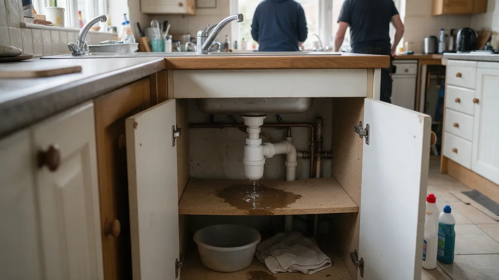

Urgent help
Turn the water off, then ring us.
Fitting kitchens is not an emergency trade and we are not going to pretend otherwise. There are two things that will not wait though: water under a sink we plumbed, and an appliance we fitted that has stopped. Those go to the front of the queue.
A demo number from the range Ofcom keeps for television and film. It rings nobody.

Generated photoDo this first
Stop the water
If it is leaking under the sink
Look for the small isolating valves on the pipes feeding the taps, usually just inside the cupboard, and turn them a quarter turn with a screwdriver so the slot sits across the pipe. If you cannot find them or it keeps coming, shut the stopcock, which is often under the sink or in the downstairs cupboard, and tell us you have done it. Then empty the cupboard so the base can dry.
If an appliance has stopped
Switch it off at the socket and leave it off. If it is a dishwasher or a washing machine and there is water on the floor, turn its isolating valve off too, which is the small valve on the pipe behind or beside it. Do not keep running it to see if it does it again. Tell us the model and what it was doing when it stopped, and a photo helps more than a description.
While you wait
Keep yourself out of it
Do
- Empty the cupboard under the sink and prop the doors open so it can dry out.
- Put a bowl under the drip and towels round it, and empty the bowl before it fills.
- Pull the appliance out only if it comes easily and the floor is dry behind it.
- Take photos before you mop anything up, because water finds its own way and the trail helps.
- Tell us the model number of the appliance when you ring. It saves a trip.
Do not
- Do not run the appliance again to see if it still leaks.
- Do not touch a socket or a switch near standing water. Turn that circuit off at the board if you can do it safely.
- Do not take a worktop joint apart to look underneath. It rarely goes back the same.
- Do not seal a wet joint. It will not stick and it hides where the water is coming from.
- Do not put the cupboard back together until the base is properly dry, or you will be back where you started.
Questions
What people ask when they ring
How quickly can you come?
It depends what is happening that day and what you have got. That is why we ask you to ring rather than fill a form in. We would rather tell you honestly when we can be there than put a number on a web page and miss it.
Is this a 24 hour service?
No, and we are not going to say it is. Kitchen fitting is a booked in trade. What we do is answer the phone, tell you what to turn off, and get a leak or a dead appliance seen before the next booked job rather than after it.
The cupboard base is soaked. Is it ruined?
Not necessarily. Chipboard that has been wet for a day usually dries out if you empty it and leave the doors open, and it is the ones that have been quietly wet for months that swell and crumble. If yours has gone soft, a new base panel is a small job on its own.
It only leaks when the washing machine runs. Is that still a leak?
Yes, and it is the common one. It normally means the waste connection or the hose clip rather than the machine, because a leak on the supply side shows up whether anything is running or not. Stop using it and ring.
Will you look at an appliance somebody else fitted?
Yes, and plenty of our small jobs are exactly that. We will tell you what we find without making a performance of it. Sometimes the appliance is fine and it is the plumbing behind it that is wrong.
Not sure how urgent it is?
Ring and describe it. If it can wait until the morning we will say so, and book you in properly.